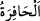

münâfıklar ise Peygamber Efendimiz (s.a.)’in nübüvvetinde şüphe ve tereddüt
içerisindeydiler. Şüphe eden kişi ise vahyin inmesini kabul eder, kendisini rüsvay
edecek vahyin inmesinden de korkar.
Ebû Müslim demiştir ki: Münâfıkların çekindiklerini göstermeleri, alay etmek içindi.
Çünkü onlar Rasûlullah (s.a.)’in her şeyi anlattığını ve bunları da vahiy yoluyla
söylediğini işittikleri zaman yalanlıyorlardı. Kendi aralarında O’nunla (a.s.) alay etmek
üzere: “Bizi rüsvay edecek bir vahyin ona indirilmesinden çekiniyoruz, korkuyoruz.”
diyorlardı. İşte bu yüzden âyetin devamında şöyle buyurulmuştur: “De ki: Siz alay edin
(bakalım)! Allah o çekindiğiniz şeyi ortaya çıkaracaktır.”
Buradaki “alay edin” emri tehdit ifade etmektedir. Yani, Alaya almayın, yoksa
cezasını görürsünüz. Cezâ, sizin rezil olmanız içindir.
“Allah o çekindiğiniz şeyi” çekindiğiniz bir sûre indirilmesini veya açığa vurmaya
çekindiğiniz çirkinliklerinizi “ortaya” kuvveden fiile, gizlilikten açığa “çıkaracaktır.”
Bu yüzden bu sûreye “
sûresi (Rezil ve rüsvay eden sûre)” de denilmiştir. Çünkü
bu sûre münâfıkları rezil ve rüsvay etmiştir. Sûreye ayrıca, münâfıkların kalblerinde
gizledikleri şeyleri eşip ortaya çıkardığı için “
(eşen, kazıp ortaya çıkaran)” adı
da verilmiştir.
65. Eğer onlara sorsan, “Biz sadece lafa dalmış, şakalaşıyorduk.” derler. De ki:
“Allah ile, O’nun âyetleriyle ve (O’nun) Elçisi ile mi alay ediyorsunuz?!”
“Eğer onlara” alay etmek için söyledikleri şeyleri “sorsan, “Biz sadece lafa
dalmış,” yolcu kâfilesinin konuşarak yolu kat’etmek için yaptığı gibi birbirimizle sohbet
ediyor, çocukların yaptığı gibi birbirimizle “şakalaşıyorduk.” derler.”
Rivayete göre Peygamber (a.s.) Tebük gazvesine giderken münâfıklardan bir süvari
bölüğü de önünde gidiyor, aralarında Kur’ân ve Rasûlullah (a.s.) ile alay ediyorlar ve
“Şu adama bakın, Şam kalelerini ve köşklerini fethetmek istiyor. O nerede buraları
fethetmek nerede! Rumlar ile savaşmayı oyuncak sanıyor. Vallahi onun ashabı yarın
dağlarda kendisinden ayrılacaklar.” diyorlardı. Allah Teâlâ, Rasûlü’ne onların bu
sözlerini haber verdi, bunun üzerine Peygamberimiz (a.s.): “Şu bölüğü durdurun!” dedi
ve yanlarına vardı: “Siz şöyle şöyle dediniz.” buyurdu. Onlar: “Ey Allah’ın nebisi!
Hayır, Allah’a yemin olsun ki ne senin ne de ashabın hakkında konuşuyorduk. Biz
sadece lafa dalmış, şakalaşıyorduk.” diye cevap verdiler.[191] Alaya ve hafife
aldıklarını inkar etmeleri üzerine Allah Teâlâ Rasûlü’ne emrederek şöyle buyurdu:
“Ey Muhammed! Onların (bu yalan) mazeretlerine iltifat etmeden, onları tekdir etmek
üzere “de ki: Allah ile, O’nun âyetleriyle ve (O’nun) Elçisi ile mi alay